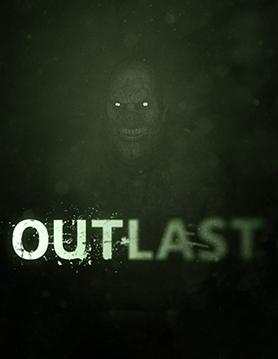

Rust е мултиплейър видео игра за оцеляване, разработена от Facepunch Studios. Като видео игра само за мултиплейър, Rust изправя играчи един срещу друг в сурова, отворена световна среда. Има опасности като радиация и диви животни, но основната заплаха идва от други играчи.
Resident evil
Resident Evil е японска поредица от игри на ужасите и медиен франчайз, създаден от Capcom. Франчайзът Resident Evil има разнообразие от схеми за контрол и механика на играта през цялата си история. Решаването на пъзели заема видно място в цялата поредица.
Elden ring
Elden Ring е екшън ролева игра от 2022 г., разработена от FromSoftware. Играта се развива в отворен свят; играчите могат свободно да изследват Lands Between и неговите шест основни области, които включват Limgrave – област с тревисти равнини и древни руини – и Caelid, пустош, който е дом на немъртви чудовища.
Dark souls
Dark Souls е поредица от тъмни фентъзи екшън ролеви игри, разработена от FromSoftware и публикувана от Bandai Namco Entertainment. Игрите Dark Souls се играят в перспектива от трето лице и се фокусират върху изследване на взаимосвързани среди, докато се биете с врагове с оръжия и магия. Играчите се бият с босове, за да напредват в историята, докато взаимодействат с неиграещи герои.
Outlast

Outlast е видео игра на ужасите за оцеляване от първо лице от 2013 г., разработена и публикувана от Red Barrels. В Outlast играчът поема ролята на разследващия журналист Майлс Ъпшър, докато навигира в полуразрушена психиатрична болница в Ледвил, Колорадо, която е препълнена с пациенти с убийства.